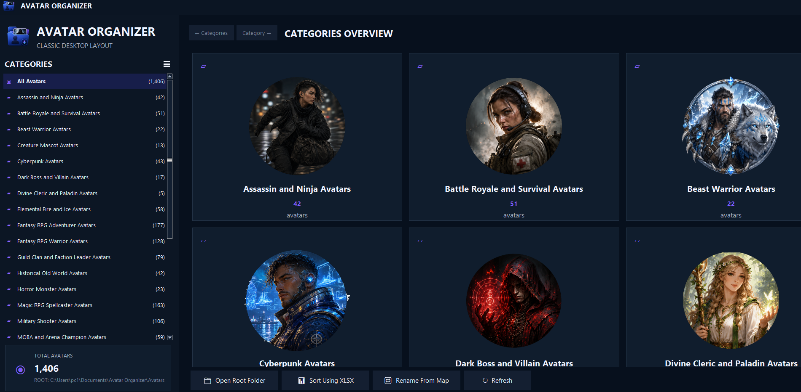

Visual category browser
Open folders as visual collections and inspect avatars at practical thumbnail sizes instead of relying on filenames alone.
Windows desktop application
Browse visually, sort into categories, move files with drag and drop, review duplicates, rename collections and export practical image sizes from one focused workspace.
Built for large collections
Open folders as visual collections and inspect avatars at practical thumbnail sizes instead of relying on filenames alone.
Move avatars into categories directly from the thumbnail workspace and refresh the collection immediately.
Find exact and visually similar files, compare likely partners and separate unwanted duplicates for review.
Apply clear numbered filenames and descriptive names while preserving collection order and companion files.
Create practical avatar and icon exports at 512, 256, 128, 64, 32 and 16 pixels, then open the exported file directly in its folder.
Start with a broad collection of avatars that may be used in personal profiles and commercial creative projects.
Clear usage rights
The included avatar licence supports both personal and commercial use while protecting the original asset library from redistribution.
Main restriction: do not redistribute the avatar image files as an avatar pack, icon pack, stock collection, template collection or similar downloadable asset product.
Read the complete License.txtSee Avatar Organizer
Work with large avatar collections using clear category views, large thumbnails and practical file-management controls.

Downloads
Installs the application and securely downloads the required avatar library during setup.
Download web installer Avatar_Organizer_Web_Setup_1.0.16.exeOpen the verified release page to view the installer, license, checksums and avatar-library file.
View release files Release v1.0.16Before installing: Windows may display a publisher or security notice if the current release is not digitally signed. Download only from this page or the official GitHub release.
Privacy: Avatar Organizer is designed to manage files on your own computer. Files are not uploaded by the application merely because you browse, sort or export them.
Download Avatar Organizer for Windows and manage large visual collections from one desktop workspace.